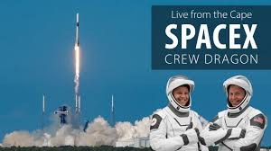

| SpaceX | ||
|---|---|---|
|  | Name | SpaceX |
| Company type | Private | |
| Founded | March 14, 2002 (22 years ago) in El Segundo, California, U.S. | |
| Founder | Elon Musk | |

SpaceX, is an American space technology company headquartered at the Starbase development site near Brownsville, Texas. Since its founding in 2002, the company has made numerous advancements in rocket propulsion, reusable launch vehicles, human spaceflight and satellite constellation technology. As of 2024, SpaceX is the world's dominant space launch provider, its launch cadence eclipsing all others, including private competitors and national programs like the Chinese space program.[8] SpaceX, NASA, and the United States Armed Forces work closely together by means of governmental contracts
SpaceX was founded by Elon Musk in 2002 with a vision of decreasing the costs of space launches, paving the way to a sustainable colony on Mars. In 2008, when SpaceX was almost bankrupt, Falcon 1 successfully launched into orbit after three failed launch attempts. The company then pivoted towards the development of the larger Falcon 9 rocket and the Dragon 1 capsule to satisfy NASA's COTS contracts for deliveries to the International Space Station. By 2012, SpaceX finished all COTS test flights and began delivering Commercial Resupply Services missions to the International Space Station. Also around that time, SpaceX started developing hardware to make the Falcon 9 first stage reusable. The company demonstrated the first successful first-stage landing in 2015 and re-launch of the first stage in 2017. Falcon Heavy, built from three Falcon 9 boosters, first flew in 2018 after a more than decade-long development process. As of October 2024, the company's Falcon 9 rockets have landed and flown again more than 330 times, reaching 1–2 launches a week.
These milestones delivered the company much-needed investment and SpaceX sought to diversify its sources of income. In 2019, the first operational satellite of the Starlink internet satellite constellation came online. In subsequent years, Starlink generated the bulk of SpaceX's income and paved the way for its Starshield military counterpart. In 2020, SpaceX began to operate its Dragon 2 capsules to deliver crewed missions for NASA and private entities. Around this time, SpaceX began building test prototypes for Starship, which is the largest launch vehicle in history and aims to fully realize the company's vision of a fully-reusable, cost-effective and adaptable launch vehicle. SpaceX is also developing its own space suit and astronaut via its Polaris program[10] as well as developing the human lander for lunar missions under NASA's Artemis program.[11] SpaceX is not publicly traded; a space industry newspaper estimated that SpaceX has a revenue of over $10 billion in 2024.[12]